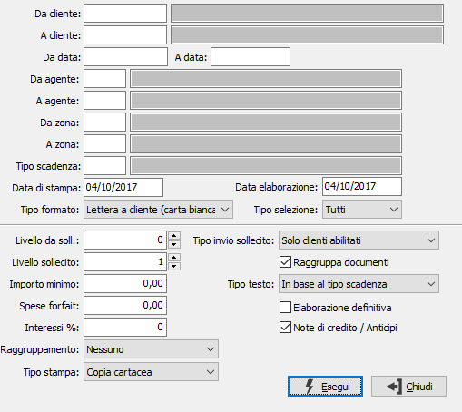

Solleciti clienti
Il programma provvede alla stampa delle lettere di sollecito ai clienti. Sono gestiti più “livelli” di sollecito (1° sollecito, 2° sollecito, ecc.), ciascuno dei quali con proprio testo sia in italiano sia in lingua estera.
I testi standard possono essere modificati dall’utente, come descritto nel capitolo relativo all'Avviamento contabile.

DA CLIENTE: indicare il codice del cliente da cui si intende iniziare la stampa della lista insoluti; confermando a vuoto la stampa inizia dal primo codice valido. Sul campo è attiva la funzione di ricerca (F9).
A CLIENTE: indicare il codice del cliente con cui si intende far terminare la stampa della lista insoluti; se si conferma a vuoto la stampa termina con l'ultimo codice valido. Sul campo è attiva la funzione di ricerca (F9).
DA DATA: indicare la data di scadenza da cui si vuole iniziare la lettura dei movimenti. Confermando a vuoto la stampa inizia con il primo movimento valido presente sulla tabella movimenti scadenze per il primo conto selezionato.
A DATA: indicare la data di scadenza con cui si vuole terminare la lettura dei movimenti. Confermando a vuoto la stampa termina con l’ultimo movimento valido presente sulla tabella movimenti scadenze per l'ultimo conto selezionato.
DA AGENTE: indicare il codice dell'agente da cui si intende iniziare la stampa dei solleciti; confermando a vuoto la stampa inizia dal primo codice valido. Sul campo è attiva la funzione di ricerca (F9).
A AGENTE: indicare il codice dell'agente con cui si intende far terminare la stampa dei solleciti; se si conferma a vuoto la stampa termina con l'ultimo codice valido. Sul campo è attiva la funzione di ricerca (F9).
DA ZONA: indicare il codice della zona da cui si intende iniziare la stampa dei solleciti; confermando a vuoto la stampa inizia dal primo codice valido. Sul campo è attiva la funzione di ricerca (F9).
A ZONA: indicare il codice della zona con cui si intende far terminare la stampa dei solleciti; se si conferma a vuoto la stampa termina con l'ultimo codice valido. Sul campo è attiva la funzione di ricerca (F9).
TIPO SCADENZA: indicare il tipo scadenza per cui si desidera emettere i solleciti. Sul campo è attiva la funzione di ricerca (F9). Se si preme il tasto F11 sarà visualizzato l’elenco dei tipi scadenza presenti consentendone la selezione multipla.
DATA DI STAMPA: indicare la data in cui vengono stampati i solleciti (viene proposta la data di sistema, modificabile).
TIPO DI STAMPA: combo box per definire il tipo di stampa relativamente all’uso. Valori ammessi. Lista solleciti inviati (uso interno); Lettera a cliente (carta bianca); Lettera a cliente (carta intestata).
TIPO INVIO SOLLECITO: Esclude/include dalla selezione i clienti in base al flag presente nella linguetta saldi "Non inviare sollecito".
DATA DI ELABORAZIONE: indicare la data (viene proposta la data di sistema, modificabile) da utilizzare per calcolare il numero dei giorni di ritardo rispetto alla data di scadenza di ciascuna partita per consentire il calcolo degli interessi.
TIPO SELEZIONE: indica quali scadenze elaborare: solo rimesse dirette,solo insoluti su effetti o entrambe.
LIVELLO DA SOLLECITARE: combo box per indicare il livello di sollecito presente nelle scadenze che si vuole sollecitare. Per il primo sollecito, ad esempio, si parte dal livello 0 in questo campo per indicare il livelli 1 nel campo successivo. I valori ammessi sono quelli configurati dall’utente. Selezionando un livello in questo campo, nel successivo campo appare il livello immediatamente superiore.
LIVELLO SOLLECITO: combo box per indicare il nuovo livello di sollecito che verrà memorizzato nelle singole scadenze sollecitate dopo la stampa definitiva. I valori ammessi sono quelli configurati dall’utente, purché superiori a quello del campo Livello da sollecitare.
IMPORTO MINIMO: indicare l’eventuale importo minimo per la stampa dei solleciti. Le scadenze inferiori a tale importo non vengono selezionate
SPESE FORFAIT: indicare il valore delle eventuali spese forfettarie da addebitare al cliente che saranno esposte nella stampa della lettera di sollecito (in chiusura della lettera).
TASSO DI INTERESSE: inserire l’eventuale tasso che verrà applicato per il calcolo degli interessi figurativi.
RAGGRUPPAMENTO: definisce quale raggruppamento deve essere eseguito in stampa. Valori ammessi: Nessuno, Agente, Zona, Agente/Zona.
TIPO STAMPA:Definisce come devono essere stampata la lettera di sollecito in presenza di invio massimo via email/fax; nel caso si scelga l'opzione di Invio email/fax non sarà possibile effettuare raggruppamenti. Valori ammessi:
Copia cartacea: sarà stampata la lettera di sollecito dei clienti per i quali non è definito un recapito di invio.
Stampa tutte le copie: sarà stampata in forma cartacea la lettera di sollecito (anche quelli per i quali è definito un recapito di invio).
Invio email/fax: sarà preparato l'allegato per l'invio mail/fax dei clienti per i quali è stato definito un recapito di invio.
RAGGRUPPA DOCUMENTI: definisce se stampare una sola lettera per tutti i documenti del cliente (casella con segno di spunta), altrimenti stampa una lettera per ogni documento.
TIPO TESTO: definisce il tipo di testo da utilizzare per la stampa: in base al tipo di scadenza, rimessa diretta, insoluto. In base a questo campo cambierà il contenuto della lettera in relazione al tipo selezionato.
ELABORAZIONE DEFINITIVA: check box per definire il tipo di stampa. Valori possibili:
vuoto = Stampa di prova
spunta = Stampa definitiva (aggiorna il livello di sollecito sulla scadenza)
NOTE DI CREDITO/ANTICIPI: include nella stampa anche eventuali note di credito oppure anticipi non assegnati a nessuna partita (casella con segno di spunta).